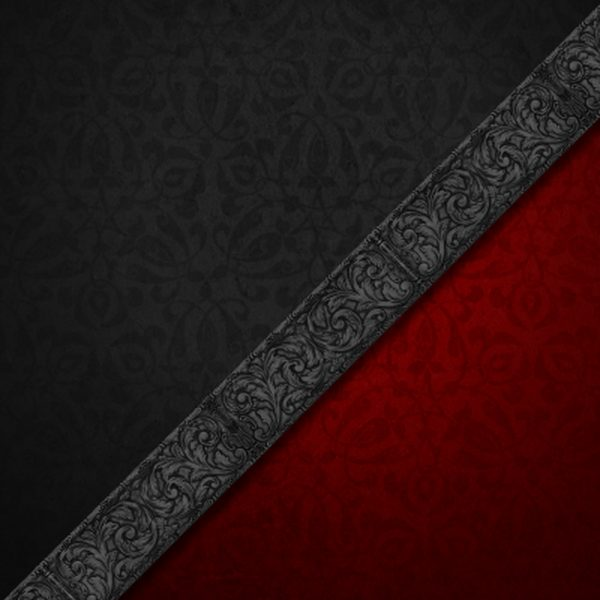

The cumulative effect
Use every favourable window — and luck accumulates.
Being in the right place at the right time is half the success.
Based on the Qi Men Dun Jia method, used by the emperors of China to achieve their victories.
At every moment in time, every direction of space carries a particular energy. By moving at that time in that direction with the right intention, you «absorb» the qualities of that energy — that is, you accumulate luck.
The cumulative effect of the walks and meditations shows up as an overall improvement in your luck. Being in favourable energies actively and often gives your wishes and intentions a way to materialise.
In moments when everything goes wrong, the walks give energetic support and help to steady the situation. They are used as first aid for resolving even the hardest situations.
By practising creative states together with the action of favourable outer energies, you give your intuition a powerful boost. You read information from your surroundings more easily and more often make the decisions that are best for you.
Movement at the right time and in the right direction draws the right result.
Buy the calendar of Qi Men walks and meditations for the period you need. It holds all the key information: the date, time, direction and Qi Men structure.
Head out for the walks or do the meditations according to the instructions and your goals. The walks are grouped by purpose — by area and by effect.
Act in line with your intention — and get the result you want. The more often you use the favourable windows, the stronger the cumulative effect.

When, how and what for to do the Qi Men walks and meditations.
It depends on the person. For me, on a walk it's easier to hold attention on my intention and my state. Plus the length of the process (about 40 minutes, including the time to settle it) naturally strengthens the effect.
But many people find it easier to connect to the energies in meditation and to hold focus for a long time in one position. There are also situations when you physically can't walk — for example, during illness or a severe lack of time. Then a meditation with focus on the task, sitting with your back to the needed direction, is an ideal alternative. Try both ways and choose the one that works for you.
The walks and meditations have a cumulative effect. The more chances to connect to favourable energies you use, the better. I recommend practising for several months.
As a side effect, you'll notice it has become much easier to keep your attention in the here and now. That alone will improve the quality of your life.
It all depends on the scale of your request, how well you perform the technique and your own actions. The bigger the request, the more layers of energy have to shift — and not only in your life, but in other people's lives too.
Every time you see even a small shift in the right direction, note it and thank the space. And do activations for the next stage. The state you're in while you walk or meditate matters a lot too — I explain this in the guide.
The result is where the energy is. Usually a person has one or two important themes in life — that's where all the energy is concentrated. I recommend walking and meditating on your current requests. If there are none and you simply want to improve your luck overall, choose the request that best matches the Qi Men structure you're using on that walk.
The intention should match the structure of the walk. If you need to improve relationships, choose a walk that affects relationships, and so on.
But you can be creative and reframe the intention to fit an existing structure. For example, if you need to improve the relationship with your boss, you can go not only on a relationships walk but on all the walks about career progress, since it's connected to your boss. Play with the wording.
When a very hard period sets in, the Qi Men luck-accumulation method becomes first aid. The faster and more often you use the right structures, the more support you'll get in resolving the crisis. Set yourself up for a process of several months to fully straighten out the situation and steer your life into a positive direction.
Use every favourable window — and luck accumulates.
After purchase you get access to the PDF files for one or several months, depending on the plan. Leave a request — and I'll get in touch to complete the purchase.
Leave your details and I'll get back to you, and we'll choose the plan and the period.
Or write directly: successcode.tv@gmail.com
Swipe sideways to read more →
I wanted to share a result after just 4 walks. My wishes were about a material improvement — renting out an apartment, which was impossible to rent for various reasons. And already on 6 August, after another walk, I got a message that the apartment could be rented out after all. For me it was a complete surprise — even though that's exactly what I'd asked for on the walks.
I've used the walks for a long time. I used to buy them from other masters. Here I really like the number of structures offered each month. Almost every day there's at least one option.
The house I live in has been measured so many times that the doorframes have «worn out» — a joke. But there's truth in every joke: the house is not feng-shui at all. So what to do? One of the proven and working options is the magic walks, as I call them. Only they let me breathe easier and often solve seemingly impossible tasks. I strongly recommend trying them. Good luck to everyone!